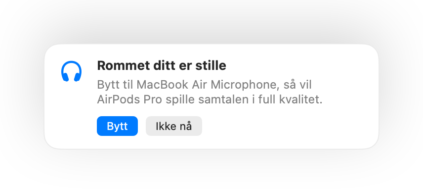

Hvorfor AirPods høres verre ut under samtaler på en Mac
Bli med i et møte med AirPods, og lyden blir plutselig flat og ullen. Det er ingen feil. Mens en app bruker AirPods-mikrofonen, bytter Bluetooth over til en samtalemodus som spiller alt i mye lavere kvalitet.
Løsningen er å snakke inn i mikrofonen på Mac-en din og la AirPods-ene bare spille av lyd. I et stille rom høres Mac-mikrofonen like bra ut, og samtalen spilles av i full kvalitet igjen. Muffle merker når rommet er stille, og foreslår byttet.
Behold full kvalitet i samtaler
- 1
Installer Muffle og la «Foreslå den beste mikrofonen for rommet» stå på.
- 2
Bli med i samtalen med AirPods som vanlig.
- 3
Når Muffle sier at rommet ditt er stille, klikker du på Bytt.
- 4
Hvis det blir støy senere, foreslår Muffle AirPods-mikrofonen igjen.

- Byttet fungerer når samtaleappen din bruker systemets standardmikrofon. I Google Meet, Zoom og Teams velger du standarden eller samme som systemet.
- Hold deg i nærheten av Mac-en når du bruker mikrofonen på den. Muffle foreslår den bare når den hører deg tydelig.
Spørsmål og svar
Hvorfor har AirPods dårlig lyd i Mac-samtaler?
Bluetooth kan ikke overføre stereolyd i høy kvalitet og stemmen din samtidig. Derfor går AirPods over til samtalemodus mens mikrofonen deres er i bruk.
Bytter Muffle mikrofon av seg selv?
Nei. Muffle foreslår bare den beste mikrofonen. Ingenting endres før du klikker på Bytt.